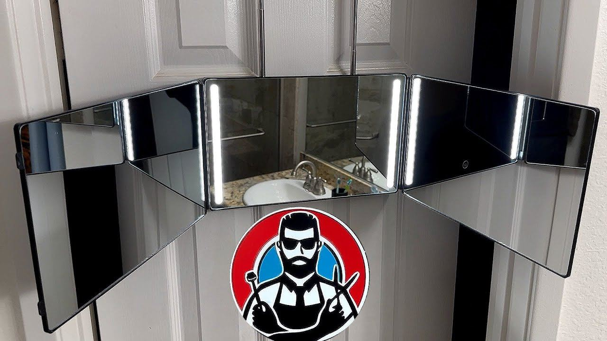

Three-Way Mirrors for Wavers: Seeing the Back of Your Own Pattern
Half of your wave pattern lives where your eyes cannot go: the back panels and the crown. Wavers train them blind, by feel and hope, until a photograph betrays a fork that has been growing for a month. A three-way mirror ends the blindness. The review in the video below, from teaves (@TyDollar), shows the folding 360-degree setup wavers use; this guide covers what to buy, how to set it up, and how to build it into your routine without turning every session into a production.
The types: folding, door-hung and LED
Folding three-panel mirrors are the waver standard: two side wings angle in until you can see the back of your head through the centre panel, then the whole thing folds flat against a wall or into a closet. Door-hung versions solve the small-room problem — they mount over a bathroom or bedroom door and need no wall space or stand. LED-lit versions add a ring of light around the panels, which sounds like a luxury until you have tried to judge a crown under one yellow bathroom bulb.
Size matters more than features. Panels too small force you to move your head to inspect sections, and every move changes the reflection's angle. Choose the widest centre panel your space allows; the back of your pattern deserves a full view, not a keyhole.
Setup and lighting
Hang or stand the mirror so the centre panel sits at eye level when you stand naturally — you will use it daily, and a daily tool mounted at a crouch gets used weekly. Angle the wings until, looking into one wing, you see the back of your head in the opposite wing. That crossover view is the entire trick; spend the first setup getting it exact.
Light the room, not the mirror: a bright, even light source behind you or above — never a single bulb glaring into the glass. Wave depth reads through shadow and shine, and harsh glare flattens both. The LED models earn their price here, wrapping even light around the head so every ridge casts its honest shadow.
Working it into the routine
Use the mirror as the audit, not the session. Brush your normal routine by feel, then step to the three-way for a two-minute inspection: crown first, then each back panel, then the connections where panels meet. What the audit finds becomes the next session's targeted work. Wavers who inspect daily catch a fork in its first week, when it is a ten-minute fix, instead of its first month, when it is a repair project.
Photograph the back view monthly from the same spot. The mirror shows you today; the photo archive shows you the truth about your progress. Together they close the last blind spot in wave training — the half of your pattern the culture sees every time you turn around.
Watch: a 360 three-way mirror review from teaves — the folding setup wavers use to see the back and crown
Video: “LipFi's Barber Shop 360 Mirror (with LED's) - Review” by teaves (@TyDollar) · Watch on YouTube
Shop the gear
Everything in this guide runs on the right gear: a durag that holds compression without slipping, a cap that stays put, and fabric that treats your hair right. The durag.store launch lineup is built to that standard — dual-layer construction, long tails, and stitching made to survive the routine. Join the launch list and use code GOLDSTANDARD for 15% off your first order.
Keep learning
- The Best Durag for 360 Waves: A Buying Guide Without the Hype — Basic · Buying Guides
- Reading a Durag Like a Buyer: Stitching, Tails and Fit Checks — Basic · Buying Guides
- Durag Sizing and Tail Length: Getting the Numbers Right — Intermediate · Buying Guides
Sources: Video — “LipFi's Barber Shop 360 Mirror (with LED's) - Review” by teaves (@TyDollar), youtube.com. Guide written by the durag.store Wave Lab.